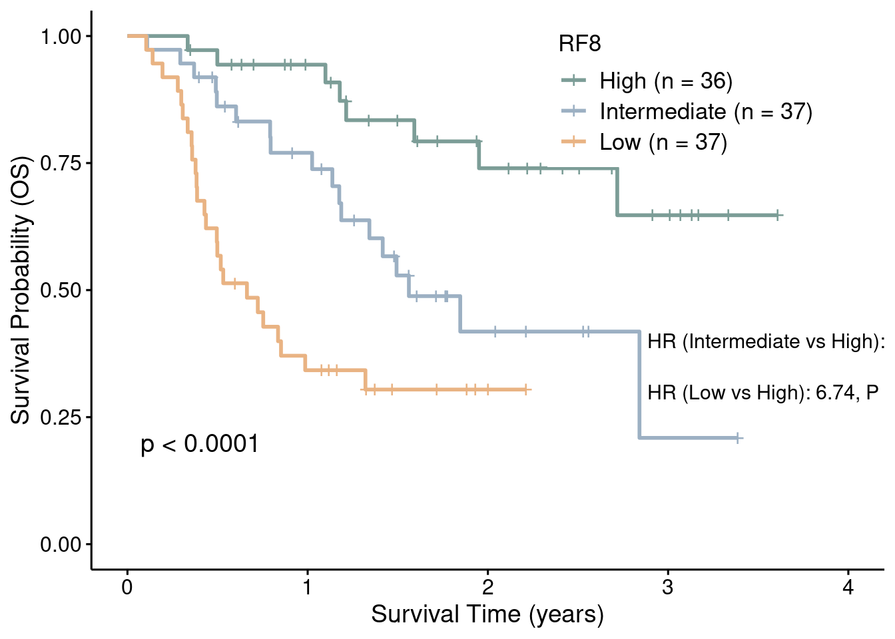

7.3 Survival plot
library(survival)
library(survminer)
library(readxl)
# Load survival analysis data
data <- read_xlsx("../03.out/figure6/01.RF8_SurvivalAnalysis.xlsx")
data$RF8.group <- factor(data$RF8.group, levels = c("High", "Intermediate", "Low"))
# Count samples in each group
n_high <- sum(data$RF8.group == "High")
n_intermediate <- sum(data$RF8.group == "Intermediate")
n_low <- sum(data$RF8.group == "Low")
# Fit the survival model (Event-Free Survival)
fit_efs <- survfit(Surv(EFS_Time, EFS_Status) ~ RF8.group, data = data)
# Perform Cox proportional hazards model for pairwise comparisons
cox_model_efs <- coxph(Surv(EFS_Time, EFS_Status) ~ RF8.group, data = data)
summary_cox_efs <- summary(cox_model_efs)
hr_values_efs <- exp(summary_cox_efs$coefficients[, "coef"]) # Hazard ratios
p_values_efs <- summary_cox_efs$coefficients[, "Pr(>|z|)"] # P-values
# Extract HR and p-values for group comparisons
hr_high_intermediate_efs <- hr_values_efs["RF8.groupIntermediate"]
pval_high_intermediate_efs <- p_values_efs["RF8.groupIntermediate"]
hr_high_low_efs <- hr_values_efs["RF8.groupLow"]
pval_high_low_efs <- p_values_efs["RF8.groupLow"]
# Create labels for hazard ratios and p-values
label_high_intermediate_efs <- paste0("HR (Intermediate vs High): ", round(hr_high_intermediate_efs, 2),
", P = ", format.pval(pval_high_intermediate_efs, digits = 3))
label_high_low_efs <- paste0("HR (Low vs High): ", round(hr_high_low_efs, 2),
", P = ", format.pval(pval_high_low_efs, digits = 3))
# Create legend labels with sample counts
legend_labels_efs <- c(
paste0("High (n = ", n_high, ")"),
paste0("Intermediate (n = ", n_intermediate, ")"),
paste0("Low (n = ", n_low, ")")
)
# Plot Kaplan-Meier curves for Event-Free Survival
p2 <- ggsurvplot(fit_efs, data = data, pval = TRUE, conf.int = FALSE,
palette = c("#7c9d97", "#9cb0c3", "#e9b383"),
risk.table = FALSE, font.legend = 13,
legend.title = "RF8",
legend = c(0.75, 0.85),
xlab = 'Survival Time (years)',
ylab = 'Survival Probability (EFS)',
legend.labs = legend_labels_efs)
# Annotate the plot with HR and p-values
p2$plot <- p2$plot +
annotate("text", x = max(data$OS_Time) * 0.8, y = 0.4, label = label_high_intermediate_efs, size = 4, hjust = 0) +
annotate("text", x = max(data$OS_Time) * 0.8, y = 0.3, label = label_high_low_efs, size = 4, hjust = 0)
print(p2)
####################################
# Overall Survival Prediction (OS)
####################################
# Fit the survival model (Overall Survival)
fit_os <- survfit(Surv(OS_Time, OS_Status) ~ RF8.group, data = data)
# Perform Cox proportional hazards model for pairwise comparisons
cox_model_os <- coxph(Surv(OS_Time, OS_Status) ~ RF8.group, data = data)
summary_cox_os <- summary(cox_model_os)
hr_values_os <- exp(summary_cox_os$coefficients[, "coef"])
p_values_os <- summary_cox_os$coefficients[, "Pr(>|z|)"]
# Extract HR and p-values for group comparisons
hr_high_intermediate_os <- hr_values_os["RF8.groupIntermediate"]
pval_high_intermediate_os <- p_values_os["RF8.groupIntermediate"]
hr_high_low_os <- hr_values_os["RF8.groupLow"]
pval_high_low_os <- p_values_os["RF8.groupLow"]
# Create labels for hazard ratios and p-values
label_high_intermediate_os <- paste0("HR (Intermediate vs High): ", round(hr_high_intermediate_os, 2),
", P = ", format.pval(pval_high_intermediate_os, digits = 3))
label_high_low_os <- paste0("HR (Low vs High): ", round(hr_high_low_os, 2),
", P = ", format.pval(pval_high_low_os, digits = 3))
# Plot Kaplan-Meier curves for Overall Survival
p3 <- ggsurvplot(fit_os, data = data, pval = TRUE, conf.int = FALSE,
palette = c("#7c9d97", "#9cb0c3", "#e9b383"),
risk.table = FALSE, font.legend = 13,
legend.title = "RF8",
legend = c(0.75, 0.85),
xlab = 'Survival Time (years)',
ylab = 'Survival Probability (OS)',
legend.labs = legend_labels_efs)
# Annotate the plot with HR and p-values
p3$plot <- p3$plot +
annotate("text", x = max(data$OS_Time) * 0.8, y = 0.4, label = label_high_intermediate_os, size = 4, hjust = 0) +
annotate("text", x = max(data$OS_Time) * 0.8, y = 0.3, label = label_high_low_os, size = 4, hjust = 0)
print(p3)